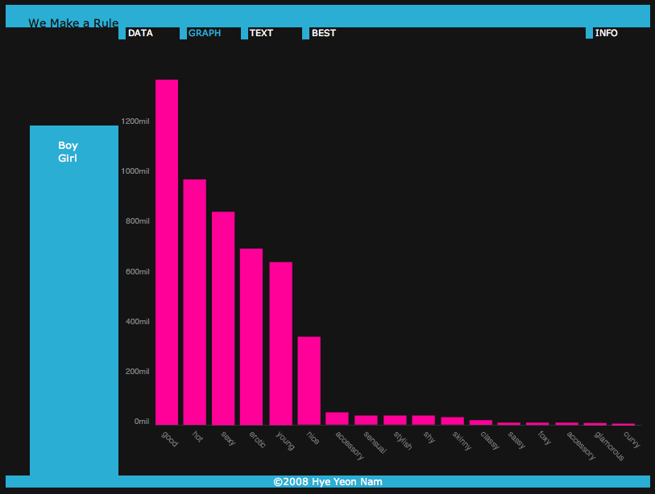
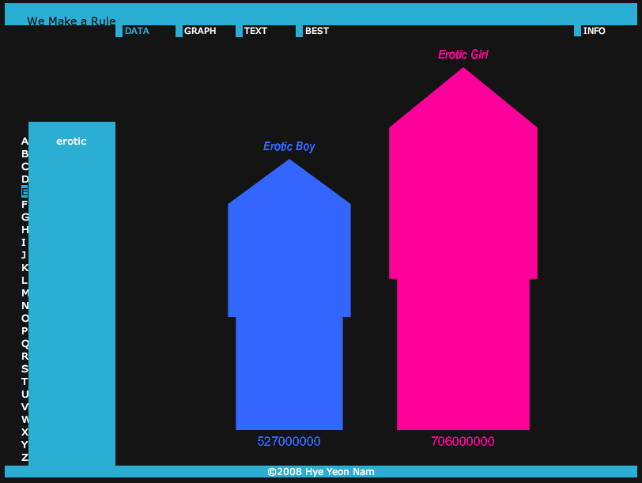

Hye Yeon Nam
We Make a Rule
2008 Dec, Data Visualisation
www.wemakearule.com
 
The idea that gender identity is culturally determined and reinforced is not new. Regardless of our intellectual realization of this concept, I argue that our society continues to reinforce traditional stereotypes. By calling out material that passes before our eyes every day, I make visible this cultural reinforcement and show how it continues to pervade our identities.
To do this, I created We Make a Rule, which is online data aggregator visualization.
I selected 50 adjectives which represent personality traits. I coupled these adjectives with both the terms “girl” and “boy.” I used Processing to search these 100 phrases on two frequently-used search engines: www.yahoo.com and www.msn.com. The 200 results returned sentences containing these phrases. My program tabulated the results, obtaining the number of sentences in each category. These results are made visible in two ways: quantitatively and qualitatively. The phrases are displayed against
each other, scaled to represent the quantity of each result. Also, pictures grabbed from the pages where the phrases occur are displayed to give a sense of context.
The most frequently occurring adjectives for boys are “brave”, “excellent” and “powerful.” For girls, the most frequently occurring are “erotic,” “hot” and “sexy.” We Make a Rule makes explicit how much the Internet reflects gender identity and enforces traditional stereotypes of boys and girls. It is an example of how data visualization can call forth a social issue. We Make a Rule is launched at www.WeMakeaRule.com.